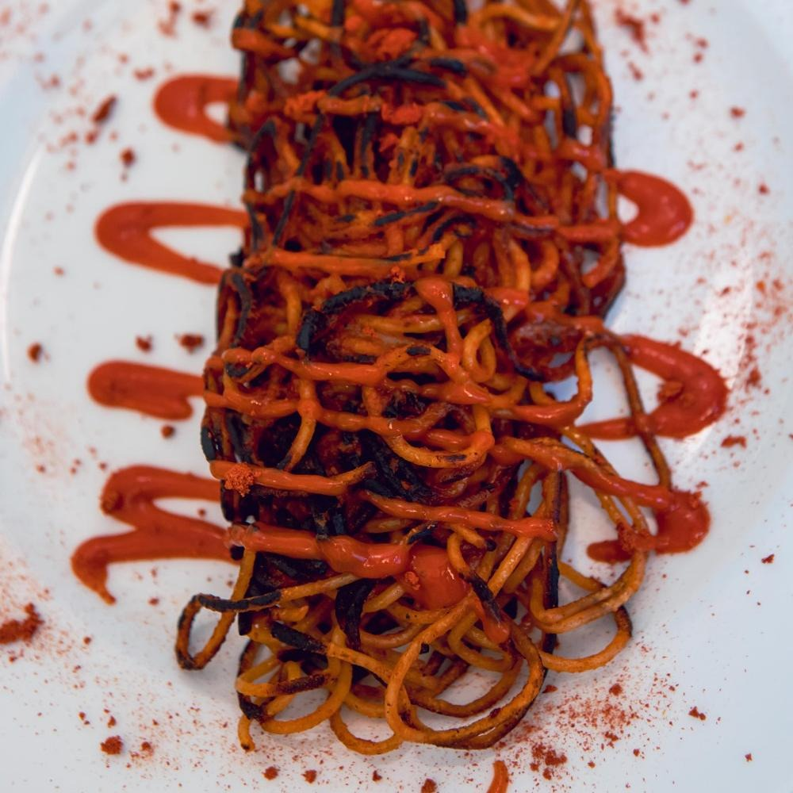
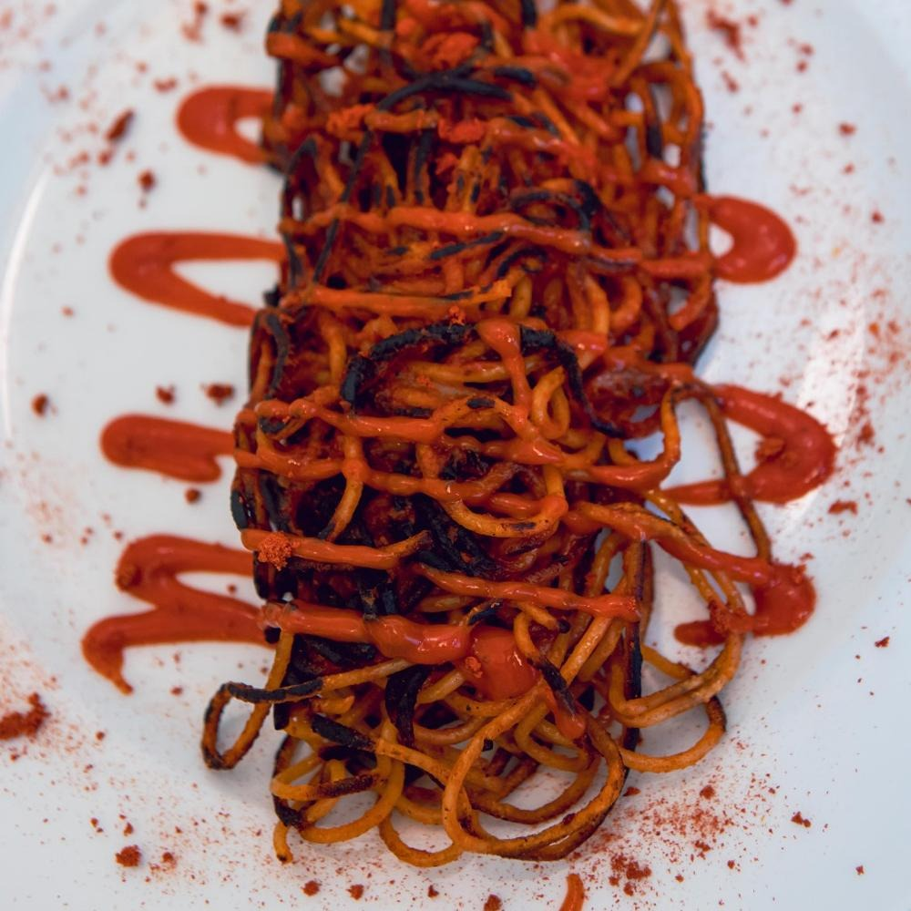

L'assassina non uccide
Non è un killer, ma il piatto preferito dei baresi
 

Gli spaghetti all'assassina sono un'icona della cucina barese, un piatto che riesce a combinare semplicità e carattere in una sinfonia di sapori. Nonostante il nome inquietante, questa specialità non ha nulla di violento, se non il suo sapore deciso che colpisce il palato al primo assaggio. Il segreto di questo piatto sta nella tecnica di cottura: la pasta viene risottata direttamente in padella con il sugo di pomodoro, ma ciò che la rende unica è la crosticina croccante che si forma durante la preparazione. È un processo che richiede attenzione e pazienza, ma il risultato è straordinario: un equilibrio perfetto tra la parte croccante e quella morbida, con un gusto intenso di pomodoro, aglio e peperoncino. La leggenda narra che il nome derivi dalla sua capacità di “uccidere” la fame in pochi bocconi, ma per i baresi è molto di più. È un piatto conviviale, da gustare in compagnia, che racchiude la storia e la tradizione culinaria di una città legata al mare, ma anche ai sapori forti e autentici della terra. Per chi vuole cimentarsi, bastano pochi ingredienti: spaghetti, passata di pomodoro, olio extravergine, aglio e peperoncino. Ma attenzione: la vera magia sta nella padella di ferro, l'unica che può garantire quel mix irresistibile di sapori e consistenze. Provatela e lasciatevi conquistare da un piatto che dimostra che, in cucina, anche il nome più minaccioso può nascondere un cuore caldo e accogliente.